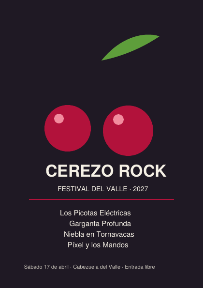
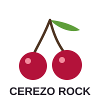
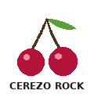
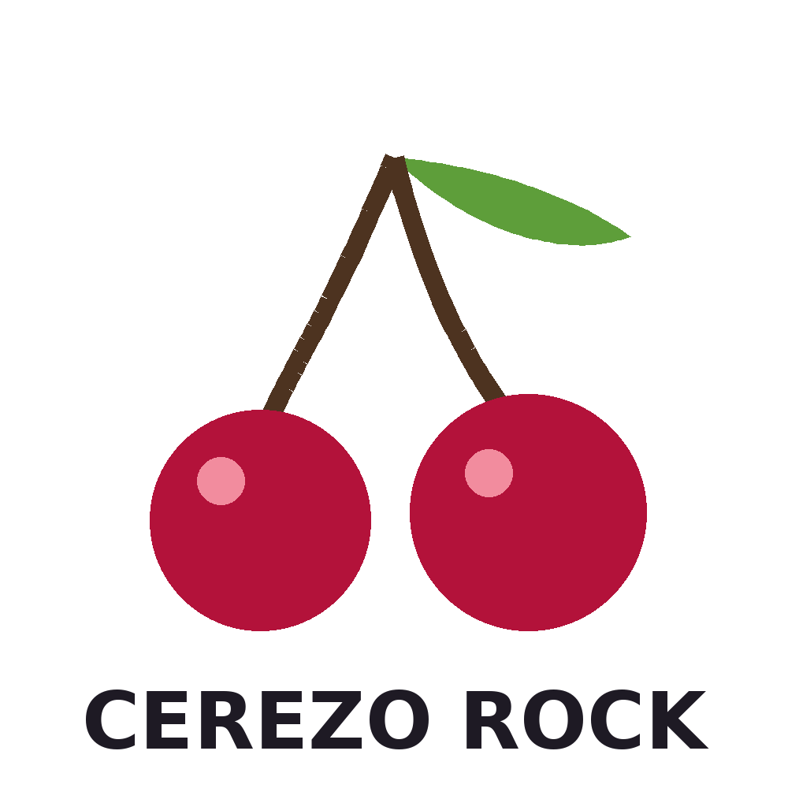
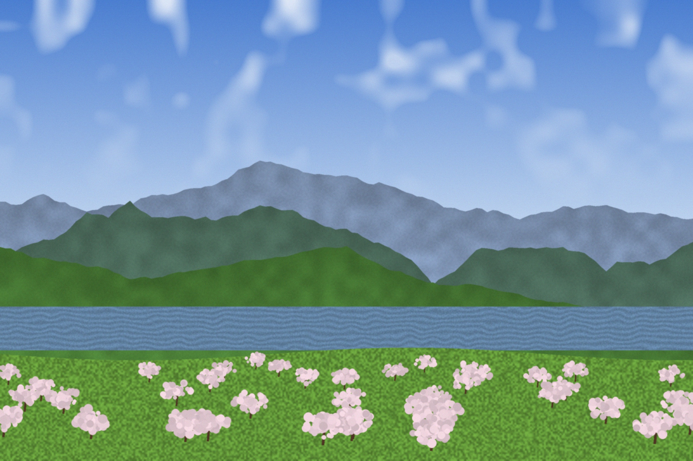
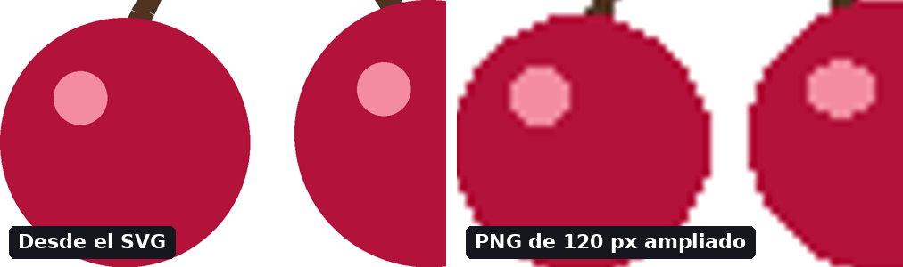
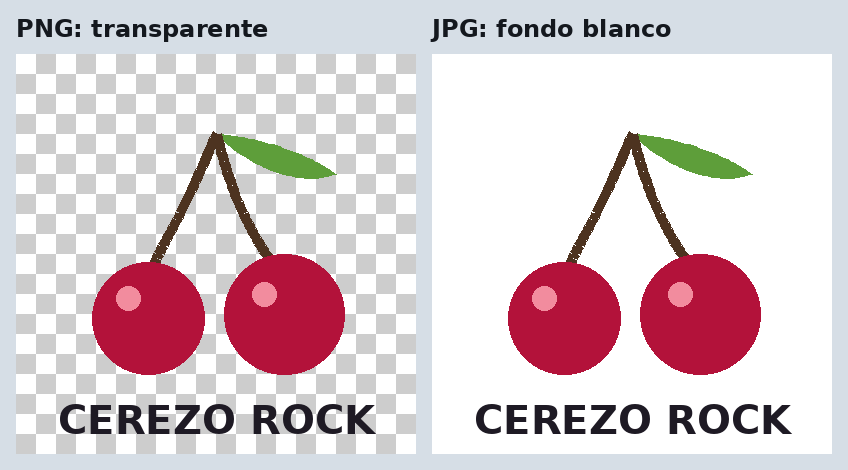

0223 · Aplicaciones ofimáticas · Tema 3 (5 de 6)
Tema 3.5 — Importar, exportar y optimizar
Qué se evalúa · RA y criterios
Resultado de aprendizaje
RA5. Manipula imágenes digitales analizando las posibilidades de distintos programas y aplicando técnicas de captura y edición básicas.
Criterio de evaluación que trabaja este subtema:
- e) Se han importado y exportado imágenes en diversos formatos.
.xcf, con todas sus capas, para seguir trabajando.
Para que la imagen se pueda usar fuera de GIMP (en una web, en Word, en
redes) hay que exportarla a JPG, PNG, WebP… Un mismo XCF da
tantas exportaciones como destinos tenga.
Material para practicar
Todo inventado para este subtema. Guárdalo en
Tema3_Proyecto/trabajo/originales.









Enlaces directos: Cartel del festival en PDF · Logotipo en SVG · Logotipo pequeño en PNG · Logotipo con transparencia · Foto del paisaje para exportar.
Para guardar el SVG y el PDF, clic derecho en el enlace > Guardar enlace como: si haces clic sin más, el navegador los abre en vez de descargarlos.
1. Guardar, exportar y sobrescribir
| Orden de GIMP | Atajo | Qué hace |
|---|---|---|
Archivo > Guardar | Ctrl+S | Guarda el XCF: capas, máscaras, textos editables, guías. Es tu archivo de trabajo. |
Archivo > Exportar como… | Mayús+Ctrl+E | Crea una copia en otro formato. El formato lo decide la extensión que escribes en el nombre: .jpg, .png, .webp… |
Archivo > Exportar a nombre.jpg | Ctrl+E | Repite la última exportación con las mismas opciones, sin preguntar. Útil cuando retocas algo y quieres actualizar el JPG. |
Archivo > Sobrescribir nombre.jpg | — | Solo aparece si abriste un JPG o un PNG: lo reemplaza. Cuidado: pierdes el original. |
- Al exportar, las capas se combinan en la copia: el XCF no se toca. No hace falta aplanar antes.
- Si cierras después de exportar, GIMP te avisa de que hay cambios sin guardar: se refiere al XCF. Guárdalo si quieres poder volver a editarlo.
- Regla del proyecto: un XCF por pieza y tantas exportaciones como destinos. Si algo cambia, editas el XCF y vuelves a exportar.
2. Importar: abrir otros formatos
GIMP abre casi cualquier imagen con Archivo > Abrir
(Ctrl+O) o arrastrándola a la ventana. Algunos formatos
necesitan que decidas algo al abrirlos:
| Qué abres | Qué te pregunta GIMP | Ten en cuenta |
|---|---|---|
| Qué páginas (como capas o como imágenes) y la resolución en ppp | Un PDF vectorial se convierte en píxeles al abrirlo: tú eliges cuántos. Un A5 a 72 ppp da 420 × 595 px; a 300 ppp, 1748 × 2480 px. | |
| SVG (vectorial) | El tamaño en píxeles al que lo dibuja | Elige ya el tamaño grande que necesites: sale nítido a cualquier tamaño. Si lo abres pequeño y luego amplías, se pixela. |
| PSD (Photoshop) | Nada | Abre las capas, pero los efectos de capa y algunos textos llegan convertidos en píxeles. |
| HEIC (fotos del iPhone) | Nada, si GIMP tiene el soporte instalado | Si no lo abre, en el iPhone: Ajustes > Cámara > Formatos > Más compatible, y las fotos nuevas se guardan en JPG. |
| Una captura o algo copiado | Nada | Archivo > Crear > Desde el portapapeles (Mayús+Ctrl+V) crea una imagen nueva con lo copiado. |
La clave: un vectorial se abre directamente al tamaño final. Un mapa de bits pequeño no se puede ampliar sin perder calidad (subtema 3.1).

3. Exportar en cada formato
En Exportar como, escribe el nombre con su extensión y pulsa
Exportar. Después sale un cuadro con las opciones de ese formato. Las
importantes:
JPG: fotos
- Calidad (0–100): cuanto más baja, menos pesa y más se nota la compresión. Para la web, entre 75 y 85.
- Marca Mostrar la vista previa en la ventana de imagen: ves cómo queda y, debajo, cuánto pesará el archivo. Mueve la calidad mirando la imagen al 100 %.
- En Opciones avanzadas, Progresivo hace que en la web se vea primero borrosa y luego nítida. Submuestreo 4:4:4 conserva mejor el texto y los rojos intensos, pero pesa más.
- Desmarca Exif y XMP si vas a publicar la foto: son los metadatos del subtema 3.2 (ubicación, cámara, fecha).
- JPG no tiene transparencia: las zonas transparentes se rellenan con el color de fondo.
PNG: logotipos, capturas, transparencia
- Es sin pérdida: el Nivel de compresión (0–9) no cambia la calidad, solo lo que tarda en guardarse y un poco el peso. Déjalo en 9.
- Guarda la transparencia.
- Para que un logotipo pese menos:
Imagen > Modo > Indexado, Generar paleta óptima con 64 o 128 colores, y luego exporta. Pasa a usar una paleta de colores, como un GIF. Hazlo en una copia: el modo indexado no deja editar bien.
WebP: la web moderna
- Hace lo de JPG (con pérdida, opción Calidad de imagen) y lo de PNG (marca Sin pérdida), y admite transparencia.
- Con la misma calidad, una foto en WebP suele pesar bastante menos que en JPG. Todos los navegadores actuales lo abren; algunos programas antiguos, no.
Otros formatos
| Formato | Para qué | Cómo se hace en GIMP |
|---|---|---|
| GIF | Animaciones sencillas | Cada capa es un fotograma. Al exportar, marca Como animación y pon el retraso entre fotogramas. Máximo 256 colores. |
| ICO | El icono de una web en la pestaña del navegador (favicon) | Cada capa es un tamaño del icono: duplica la capa y escala cada copia a 16, 32 y 48 px. Exporta como favicon.ico. |
| Enviar a imprenta o adjuntar a un documento | Exportar como con extensión .pdf. Con varias capas, puedes marcar que cada capa sea una página. | |
| TIFF | Imprenta y archivo, sin pérdida | Al exportar, compresión LZW (sin pérdida). Pesa mucho: no es para la web. |

4. Optimizar el peso
Una imagen optimizada es la más ligera que se sigue viendo bien en su destino. Se consigue en cuatro pasos, y en este orden:
- Los píxeles justos. Escala al tamaño en que se va a ver (subtema 3.3). Una foto de 2400 px para un hueco de 1200 px pesa cuatro veces más para nada.
- El formato adecuado. Foto: JPG o WebP. Logotipo, captura o transparencia: PNG o WebP. Imprenta: PDF o TIFF.
- La calidad más baja que no se note. Baja la calidad mirando la vista previa al 100 % hasta que veas artefactos, y sube un poco.
- Sin metadatos si se va a publicar.
Esto es lo que pesa la foto del material (2400 × 1600 px) según cómo la exportes. Son valores medidos; en tu ordenador pueden variar un poco:
| Exportación | 2400 × 1600 | 1200 × 800 |
|---|---|---|
| JPG, calidad 90 | ≈ 950 KB | ≈ 155 KB |
| JPG, calidad 80 | ≈ 410 KB | ≈ 95 KB |
| JPG, calidad 60 | ≈ 210 KB | ≈ 60 KB |
| WebP, calidad 80 | ≈ 260 KB | ≈ 50 KB |
| PNG (sin pérdida) | ≈ 5,2 MB | ≈ 1,2 MB |
| TIFF con LZW (sin pérdida) | ≈ 8 MB | — |
Fíjate: reducir a la mitad de ancho divide el peso entre cuatro (hay la cuarta parte de píxeles), y pasar de PNG a JPG 80 lo divide entre doce. Con el logotipo pasa al revés: en PNG pesa unos 15 KB y en JPG, unos 60 KB, porque JPG no está pensado para colores planos y bordes nítidos.
Para cada destino
| Destino | Píxeles | Formato | Peso |
|---|---|---|---|
| Miniatura de YouTube | 1280 × 720 | JPG o PNG | YouTube admite hasta 2 MB; con 100–300 KB basta |
| Foto para una web | 1200 de ancho, como mucho | WebP o JPG | Menos de 200 KB |
| Post cuadrado en redes | 1080 × 1080 | JPG | Menos de 300 KB (la red la recomprime igualmente) |
| Logotipo para web y documentos | El necesario, o SVG | PNG con transparencia | Pocos KB |
| Icono de la web | 16, 32 y 48 px | ICO | Muy poco |
| Imprenta | Tamaño de papel a 300 ppp | PDF o TIFF | Lo que ocupe: aquí manda la calidad |
Nombres de archivo
Nombres sin espacios, sin tildes ni eñes y en minúsculas, con
guiones, la pieza y el tamaño: cerezo-rock_miniatura_1280x720.jpg.
Así no se rompen en una web ni en un servidor, y se sabe qué es cada uno sin
abrirlo.
Convierte y optimiza varias imágenes a la vez en el laboratorio
5. Las imágenes en los documentos
Importar una imagen en Word o en un PDF también es importar. Y es la causa número uno de documentos que no caben en un correo.
Insertar > Imágenes > Este dispositivoincrusta la imagen: va dentro del.docx. Una foto de 5 MB hace que el documento pese 5 MB más.- En el mismo cuadro, la flecha del botón Insertar ofrece Vincular al archivo: el documento solo guarda la ruta de la imagen. Pesa poco, pero si mueves o envías el documento sin la imagen, aparece un recuadro vacío.
- Comprimir: selecciona una imagen >
Formato de imagen > Comprimir imágenes. Elige la resolución según el destino (Impresión 220 ppp, Web 150 ppp, Correo electrónico 96 ppp) y marca Eliminar las áreas recortadas de las imágenes. Si desmarcas Aplicar solo a esta imagen, comprime todas. - Word ya comprime al guardar según
Archivo > Opciones > Avanzadas > Tamaño y calidad de imagen. Si ahí está marcado No comprimir las imágenes del archivo, el documento conserva las fotos enteras.
Lo mejor es lo del apartado 4: preparar la imagen en GIMP con los píxeles justos antes de meterla en el documento.
6. Prácticas del subtema
Acreditan el criterio e (importar y exportar en diversos formatos). Entrega los archivos que se piden y una memoria en PDF con las capturas y las tablas.
- P3.5.1 · Importar. (1) Abre
importar-cartel.pdfen GIMP a 72 ppp y otra vez a 300 ppp, y apunta los píxeles de cada una. (2) Abreimportar-logo.svga 2000 × 2000 px y expórtalo en PNG. Abreimportar-logo-pequeno.png, escálalo a 2000 × 2000 y expórtalo en PNG. Compara los dos al 100 % con una captura y explica la diferencia. (3) En un documento de Word nuevo, insertaexportar-foto.jpgy guarda con No comprimir las imágenes del archivo marcado; apunta el peso del.docx. Comprime la imagen a Web (150 ppp), guarda otra vez y apunta el peso nuevo. - P3.5.2 · Una foto, cuatro formatos.
Escala
exportar-foto.jpga 1200 × 800 y expórtala en JPG con calidad 90, en JPG con calidad 60, en PNG y en WebP con calidad 80. Haz una tabla con el peso de cada una y una captura de un detalle al 200 % de la JPG 60. ¿Cuál usarías para una web y por qué? - P3.5.3 · Un logotipo, tres salidas. Con
exportar-logo-transparente.png: (1) expórtalo en JPG y en PNG y compara los dos sobre un fondo de color; (2) pásalo a modo indexado con 64 colores y expórtalo en PNG: ¿cuánto pesa ahora?; (3) crea unfavicon.icocon tres capas de 16, 32 y 48 px. - P3.5.4 · Cada destino, su archivo. A
partir de
exportar-foto.jpg, prepara: una miniatura de YouTube (1280 × 720, JPG, menos de 200 KB), una foto para una web (1200 px de ancho, WebP, menos de 100 KB), un post cuadrado (1080 × 1080, JPG, menos de 150 KB) y una copia para imprimir a 15 × 10 cm a 300 ppp (TIFF con LZW). Todas sin metadatos y con nombres que sigan la norma del apartado 4. Haz una tabla con los píxeles, la calidad elegida y el peso de cada una.
Qué entregas de las prácticas del 3.5
Las cuatro prácticas van juntas: los archivos exportados y una memoria con las capturas y las tablas de peso.
Sube a Moodle <usuario>_p35.zip. En su raíz:
| Qué es | Nombre dentro del ZIP | Parte |
|---|---|---|
| Memoria con capturas y tablas | <usuario>_p35.pdf | Todas |
| Logotipo abierto desde el SVG, 2000 px | <usuario>_a01_1.png | P3.5.1 |
| Logotipo pequeño ampliado, 2000 px | <usuario>_a01_2.png | P3.5.1 |
| Documento con la foto comprimida | <usuario>_a01.docx | P3.5.1 |
| Foto en JPG 90 y en JPG 60 | <usuario>_a02_1.jpg · <usuario>_a02_2.jpg | P3.5.2 |
| Foto en PNG y en WebP | <usuario>_a02.png · <usuario>_a02.webp | P3.5.2 |
| Logotipo en JPG | <usuario>_a03.jpg | P3.5.3 |
| Logotipo en PNG y en PNG indexado | <usuario>_a03_1.png · <usuario>_a03_2.png | P3.5.3 |
| Icono | <usuario>_a03.ico | P3.5.3 |
| Miniatura y post | <usuario>_a04_1.jpg · <usuario>_a04_2.jpg | P3.5.4 |
| Foto para la web y copia para imprimir | <usuario>_a04.webp · <usuario>_a04.tif | P3.5.4 |
Dentro del ZIP los archivos llevan estos nombres; en tu carpeta de
trabajo, los de la norma del apartado 4 (en la tabla de la P3.5.4 pon los dos).
La memoria cumple las normas del módulo: portada, índice con hiperenlaces,
páginas numeradas, enunciado en negrita y respuesta en normal,
Figura N: … en cada imagen, sin faltas y capturas de pantalla
completa con la fecha y el archivo abierto.
Capturas que no pueden faltar en la memoria
- P3.5.1: el cuadro de importar el PDF con 300 ppp, y los dos logotipos ampliados al 100 %.
- P3.5.1: las propiedades del
.docx(peso) antes y después de comprimir. - P3.5.2: el detalle de la JPG 60 al 200 %.
- P3.5.4: el cuadro de exportar JPG con la vista previa y el peso, y los metadatos desmarcados.
Comprueba antes de entregar
- El cartel a 72 ppp mide 420 × 595 px y a 300 ppp, 1748 × 2480 px.
- Los dos logotipos de la P3.5.1 miden 2000 × 2000: el del SVG tiene los bordes nítidos y el del PNG pequeño, escalonados o borrosos.
- Al comprimir a 150 ppp, el
.docxpasa de algo más de 1 MB a unos 100–200 KB. - Las cuatro fotos de la P3.5.2 miden 1200 × 800. La PNG es con diferencia la que más pesa.
- El JPG del logotipo tiene fondo blanco; los PNG, transparente. El indexado pesa menos que el PNG normal.
- El ICO tiene tres tamaños: ábrelo en GIMP y verás tres capas.
- En la P3.5.4 cada archivo cumple sus píxeles y su peso máximo, y ninguno tiene Exif (compruébalo con el visor del laboratorio).
Cómo debe quedar
| P3.5.2 (1200 × 800) | Peso |
|---|---|
| JPG 90 | ≈ 155 KB |
| JPG 60 | ≈ 60 KB |
| PNG | ≈ 1,2 MB |
| WebP 80 | ≈ 50 KB |
| P3.5.4 | Píxeles | Peso |
|---|---|---|
cerezo_miniatura_1280x720.jpg (calidad 80) | 1280 × 720 | ≈ 90 KB |
cerezo_web_1200x800.webp (calidad 80) | 1200 × 800 | ≈ 50 KB |
cerezo_post_1080x1080.jpg (calidad 80) | 1080 × 1080 | ≈ 115 KB |
cerezo_imprimir_15x10.tif (LZW) | 1772 × 1181 | ≈ 4,5 MB |
Fallo más común: guardar con Ctrl+S y entregar el XCF, o escribir «foto.jpg» en Guardar como. Para JPG, PNG o WebP hay que exportar.
7. Comprueba lo que has entendido
Ocho preguntas. No cuenta para la nota: es para que veas si puedes seguir.